Tráiler v6 · vista previa
- Pantalla completa en todos los planos: sin recorte ni zoom hacia delante.
- «Cada golpe deja marca» (7,2–12,2 s): golpe del Caballero → venda en la zona herida → contragolpe de Aldric. Rótulo arriba, solo durante el golpe.
- Alijo con equipo variado y pocas bolsas de oro.
- Nuevo plano «También en el móvil» (22,0–23,5 s) antes de «Sal con vida». Duración total: 30 s.
Tramo 6–12 s
Tráiler completo
Capturas
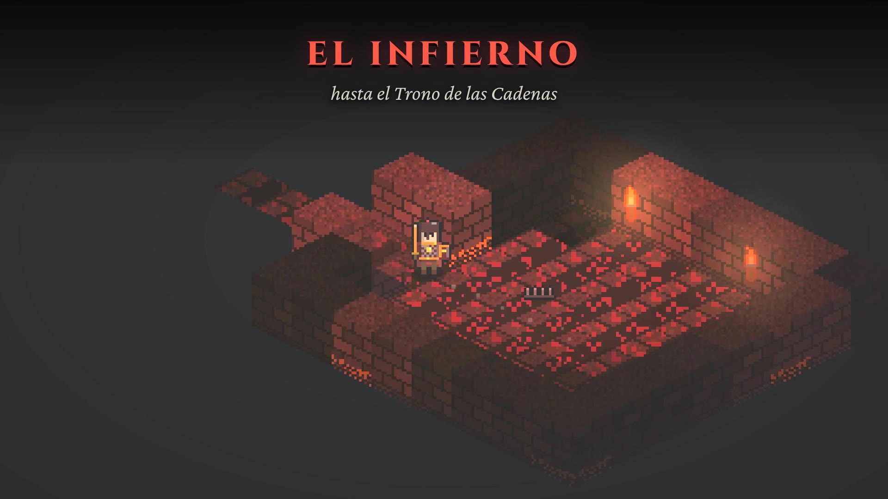
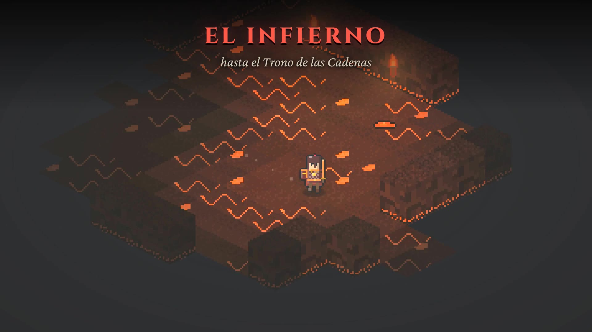
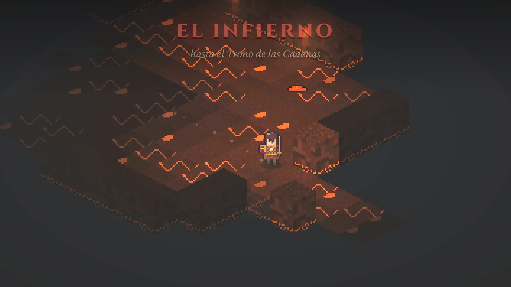
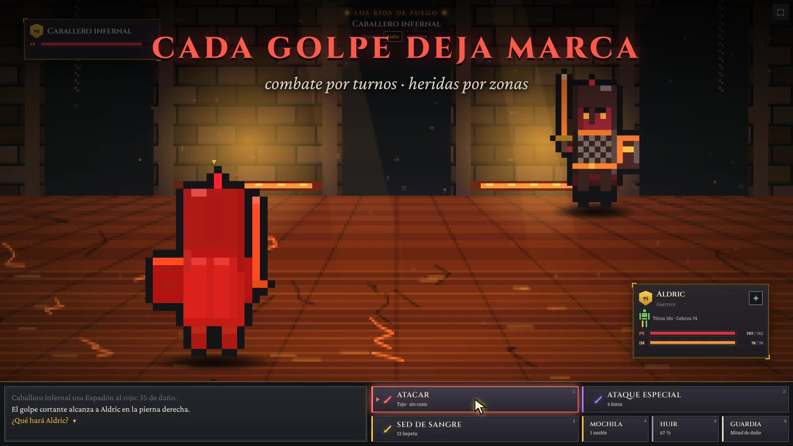
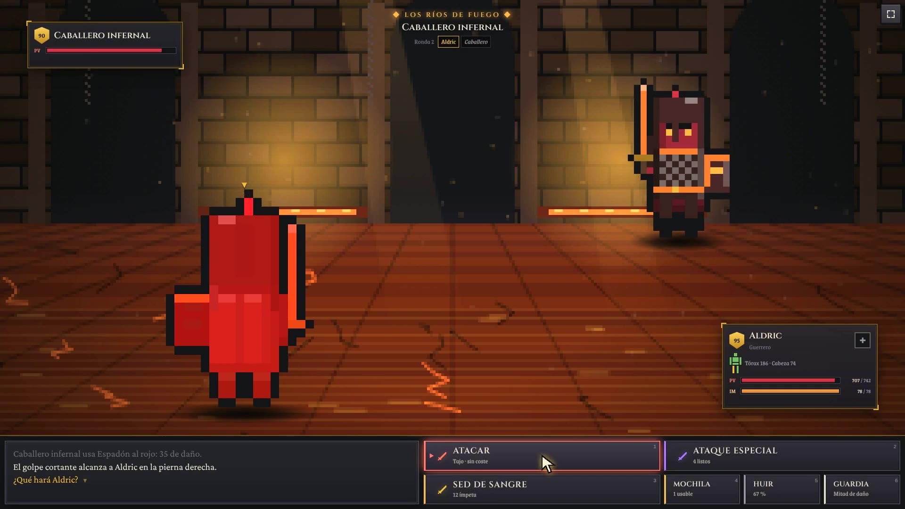
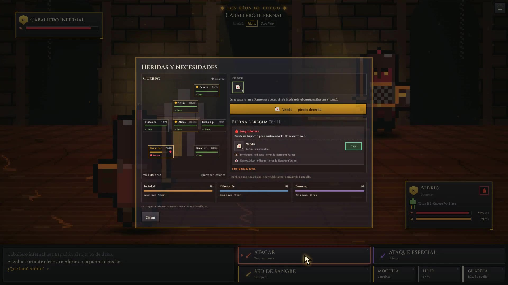
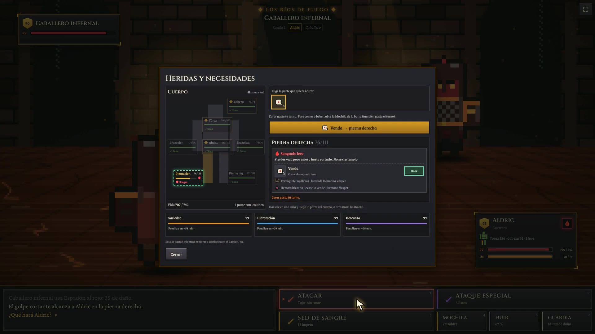
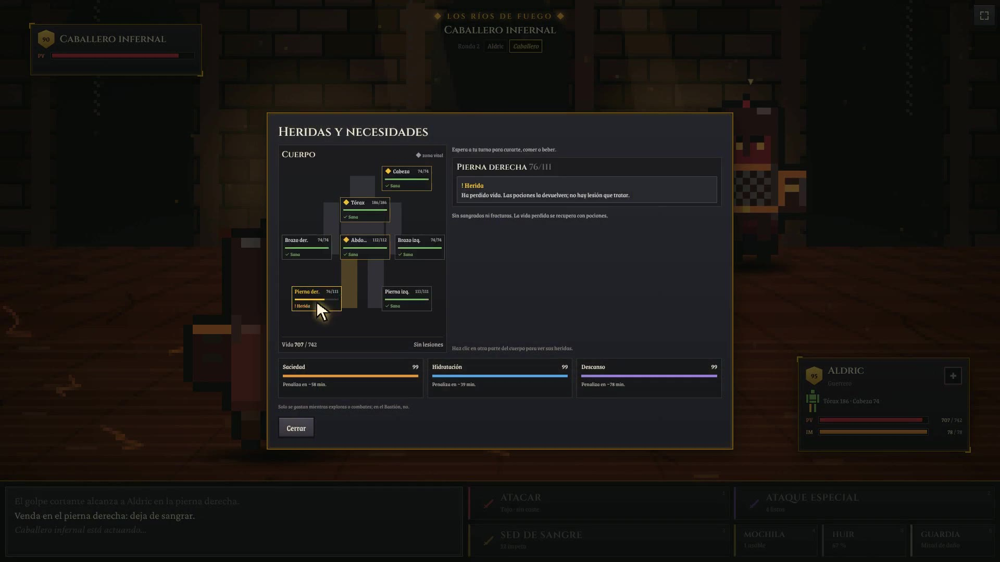
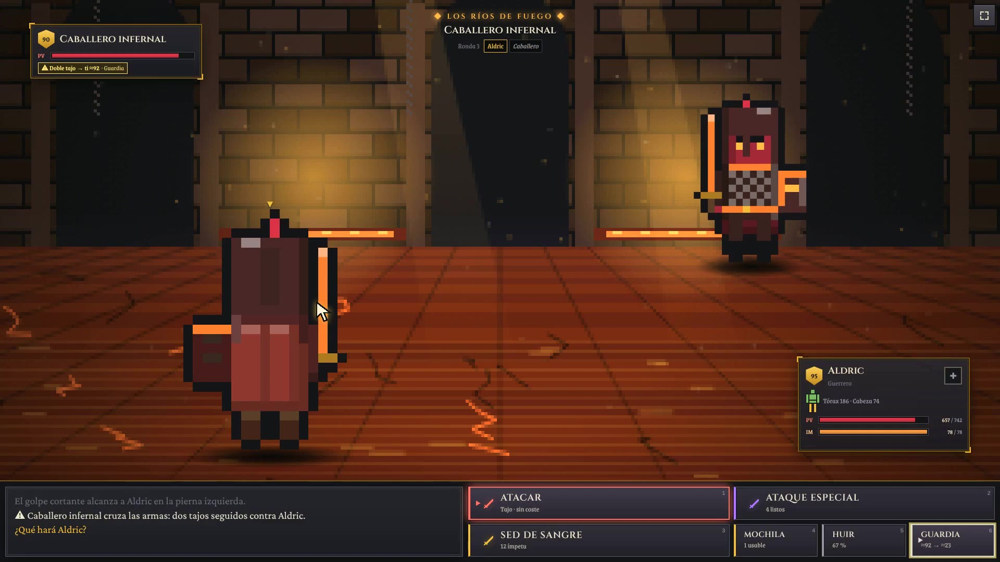
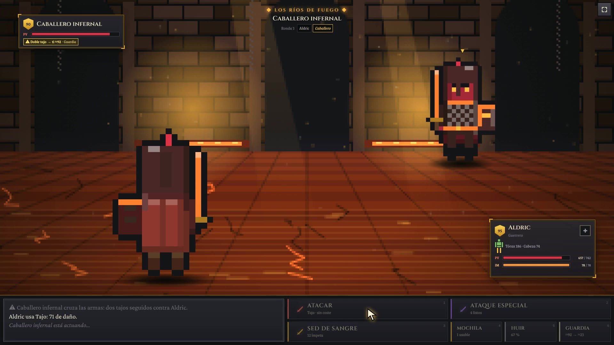
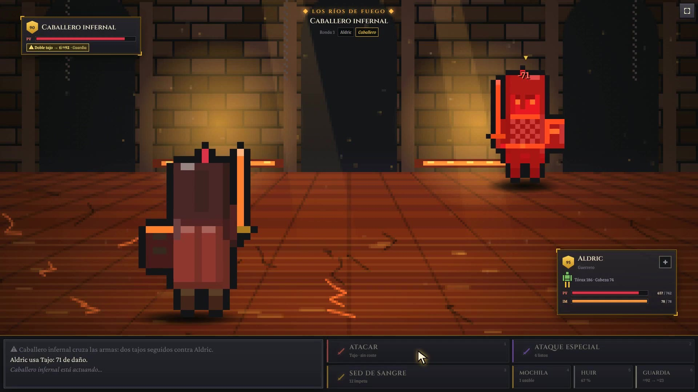
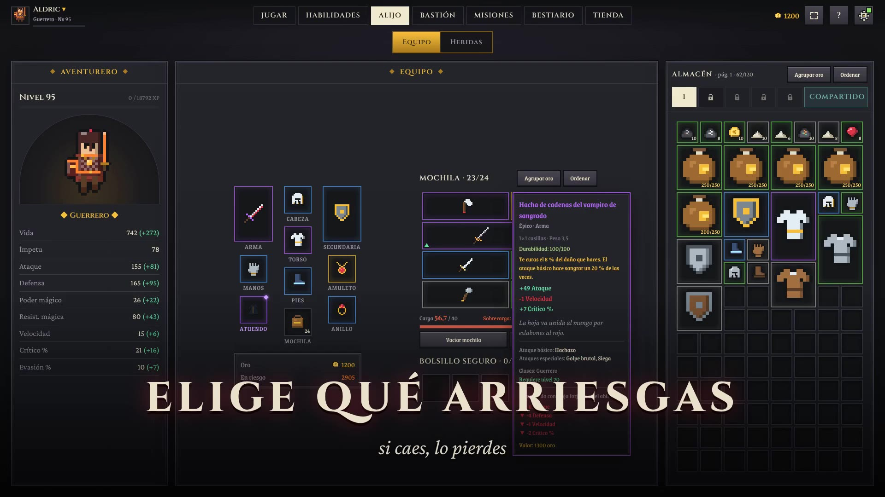
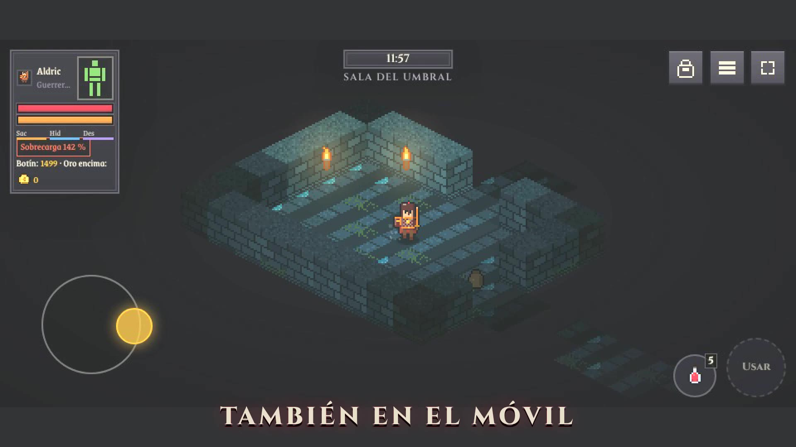
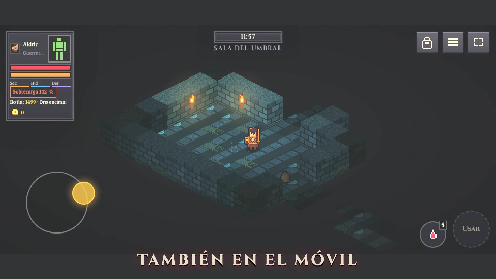
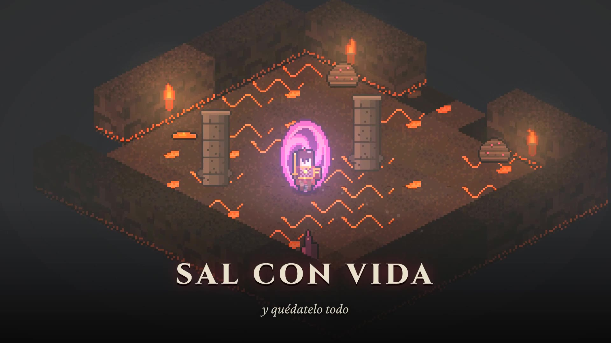